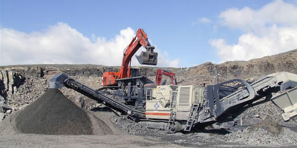

Portable Crusher
Portable crusher is also called mobile crusher station, is a new kind of rock crushing equipment, greatly expanding the crushing operation concept. Its design purpose is to stand in the position of customers, to eliminate the broken ground, crushing obstacles environment to customers as the primary solution, and provides the operation of the project facilities high efficiency and low cost for the customer.
The Structure of Portable Crusher
Portable crusher is crushing unit by jaw crusher plus feeder composed, while equipped with efficient double-feeder. Bunk feeder while reducing jaw crusher throughput compliance, but also increase the total production. wide range of applications jaw crusher, mobile jaw crusher is mainly used in primary crushing quarry products. processing range of mobile jaw crusher 50 to 500 tons / hour.
Portable crusher is a kind of high-efficiency crushing equipment, using self-driven approach, advanced technology, fully functional. In any terrain, this equipment can reach anywhere in the workplace. This reduces the material processing operation, and to facilitate the coordination of all of the auxiliary machinery. By wireless remote manipulation, can easily open the crusher to the trailer, and transported to the job site. Because without assembly time, so equipment to the job site one can immediately put to work. Jaw portable crusher crushing ratio, the optimum design to meet the needs of the crusher technical features, high productivity, uniform size of finished material.
Working Principle of Portable Crusher
Potable crusher crusher compared with ordinary with mobile convenience, small footprint, can be directly selected venue, place to live can be put into production, there is an important characteristic is common in raw material arrives crusher crusher cavity between the feeder and to go through the crusher conveyor belt placed in surface mine transmission, and portable crusher station belongs crusher crushing raw feeder is tight adjacent the middle incompatibility transmission requires the conveyor, the raw material from the mine face shovel directly transported to the feed mouth of the crusher, the raw material will be injected at a fixed speed into the crusher, so that not only the unnecessary step of reducing the speed and the cost is also greatly reducing the unnecessary trouble, crushing station each broken equipment back and forth and so on until the work is completed until all the material is broken.

Application of Portable Crusher
Portable crusher, mining machinery and equipment more than a stage of bulk materials and check the discharge of mining equipment for screening according to a certain specification. Portable crusher is mainly used in metallurgy, chemical industry, building materials, water, electricity is needed to move the business of processing materials, especially in highway, railway, water and electricity supply business flow stone station project, the user can according to the size of the processing of raw materials and different types of materials, finished products using a variety of configuration.
Features
- 1. eliminates the cumbersome structure of the building when the broken steel, foundation, saving a lot of time.
- 2. can be directly selected sites, directly to the site, without transport, directly to finished size.
- 3. suitable for crushing small venues for construction waste, construction waste crushing.
- 4. portable crusher station has broken equipment at all levels of reasonable matching, unobstructed discharge line, reliable, easy to operate, energy efficient features.
- 5. good mobility, can extend with the raw material or the construction site, and can be a variety of combinations to meet the needs of different materials.


Request for Quotation
You can get the price list and a MCC representative will contact you within one business day.